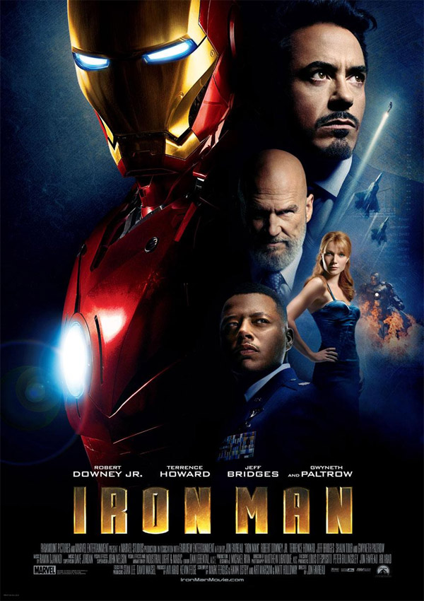
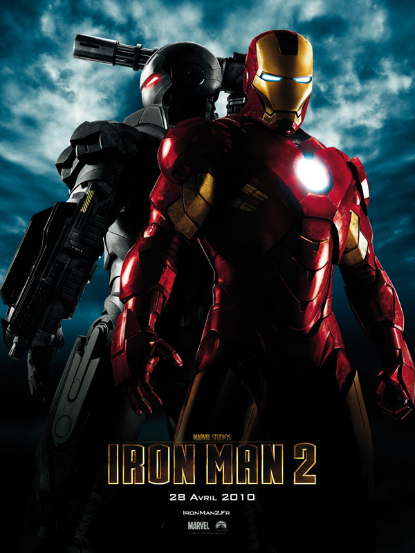

Reseña por: Emiliano Arrroyo
The Batman se perfila como una de las películas más esperadas del próximo año. La cinta dirigida por Matt Reeves cuenta con Robert Pattinson en el rol de Bruce Wayne y promete una versión mucho más oscura del héroe de Ciudad Gótica. Desde el comienzo, la película de Warner Bros. se ha visto envuelta en misterio, con pocos detalles de su trama y una muy escueta descripción de los personajes. Aunque los fanáticos tuvieron un pequeño anticipo gracias al primer avance de The Batman, ahora podrán tener algunos detalles extra de lo que se viene. Durante los últimos días se llevó a cabo una proyección de prueba de la película y las primeras reacciones de los presentes ya se encuentran online. Si bien no hubo ninguna revelación, ni ningún spoiler sobre el filme, estas apreciaciones generales nos dejan una buena impresión de qué se puede esperar de la nueva película en solitario de El Caballero de la Noche. Una de las primeras observaciones que llama la atención sobre el largometraje es que es "muy gráfico, muy oscuro y muy aterrador", definiéndola en líneas generales como una "película de terror". Asimismo hubo muchos elogios para las actuaciones de Pattison,Paul Dano como El Acertijo y Zoe Kravitz como Gatúbela, que se trataría de una de las mejores versiones del personaje. Además hubo gran sorpresa con el rediseño del Batimovil que sin duda gustará mucho a los fans.
Last updated 1 hours ago

Reseña por: Juan Peréz
Batman 1989 es uno de los superhéroes más populares (si no es que el más popular) de todos los tiempos. La oscuridad y tragedia que lo rodean desde sus orígenes lo convirtieron en uno de los mejores personajes de DC Comics , y ha cautivado generación tras generación. En la década de 1960 tuvo una de sus adaptaciones a la televisión más famosas, donde Adam West le daba vida al superhéroe murciélago, pero lo convertía en una versión menos oscura y bastante cómica que no hacía justicia al trasfondo del personaje original. Batman es una película estadounidense del género de superhéroes estrenada en 1989 y basada en el personaje homónimo de DC Comics. Es la primera de las cuatro películas que forman la primera serie fílmica de Batman. Está dirigida por Tim Burton y protagonizada por Michael Keaton, Jack Nicholson y Kim Basinger. Al igual que Superman: La película, de Richard Donner, es considerada un hito en el subgénero cinematográfico de superhéroes, Batman, dirigida por Tim Burton, es un hito para las adaptaciones de Batman a la pantalla grande, pues le regresó la oscuridad (literal y metafórica) al superhéroe, y nos entregó la Ciudad Gótica más tétrica y dark de todas. En 1989 Burton estaba empapado de la subcultura gótica, con influencias del Romanticismo, Edgar Allan Poe , el expresionismo alemán y el cine y la literatura de terror. Por estas razones fue el indicado para que Batman volviera a ser El Caballero Oscuro, en lugar de El Caballero Brillante de Adam West.
Last updated 1 hours ago

Reseña por: Juan Peréz
Iron Man (conocido en español como el Hombre de Hierro) es un superhéroe que aparece en los cómics estadounidenses publicados por Marvel Comics. El personaje fue co-creado por el escritor y editor Stan Lee, desarrollado por el guionista Larry Lieber y diseñado por los artistas Don Heck y Jack Kirby. Hizo su primera aparición en Tales of Suspense #39 (marzo de 1963), y recibió su propio título en Iron Man #1 (mayo de 1968). Anthony Edward Stark conocido como Tony Stark, es un multimillonario magnate empresarial estadounidense, playboy e ingenioso científico, quien sufrió una grave lesión en el pecho durante un secuestro en el Medio Oriente. Cuando sus captores intentan forzarlo a construir un arma de destrucción masiva crea, en cambio, una armadura para salvar su vida y escapar del cautiverio. Más tarde, Stark desarrolla su traje, agregando armas y otros dispositivos tecnológicos que diseñó a través de su compañía, Industrias Stark. Él usa el traje y las versiones sucesivas para proteger al mundo como Iron Man. Aunque al principio ocultó su verdadera identidad, Stark finalmente declaró que era, de hecho, Iron Man en un anuncio público.
Last updated 1 hours ago

Reseña por: Emiliano Arroyo
Iron Man 2 es una película de superhéroes estadounidense de 2010 basada en el personaje homónimo de Marvel Comics, producida por Marvel Studios y distribuida por Paramount Pictures.[a] Es la tercera entrega del universo cinematográfico de Marvel. La cinta fue dirigida por Jon Favreau, con un guion de Justin Theroux. Es protagonizada por Robert Downey Jr., Gwyneth Paltrow, Don Cheadle, Scarlett Johansson, Sam Rockwell, Paul Bettany, Mickey Rourke y Samuel L. Jackson. Seis meses después de los eventos de Iron Man, Tony Stark se resiste a los llamados del gobierno de los Estados Unidos para entregar la tecnología de Iron Man, al mismo tiempo que combate su salud deteriorada debido al reactor arc en su pecho. Mientras tanto, el malvado científico ruso Ivan Vanko ha desarrollado la misma tecnología y construido armas propias para vengarse de la familia Stark, uniendo fuerzas con el empresario rival de Stark, Justin Hammer, en el proceso.
Last updated 1 hours ago